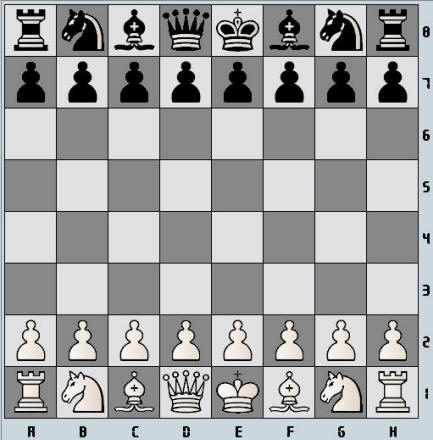

INDICE
Prefazione
Articolo 1: La natura e gli obiettivi della partita di scacchi
Articolo 2: La
posizione iniziale dei pezzi sulla scacchiera
Articolo 3: Le mosse
dei pezzi
Articolo 4:
L'esecuzione della mossa
Articolo 5: La
conclusione della partita
Tornei - Articolo 6:
L'orologio per gli scacchi
Tornei - Articolo 7:
Irregolarita'
Tornei - Articolo 8:
L'annotazione delle mosse
Tornei - Articolo 9:
La partita patta
Tornei - Articolo 10:
Quickplay Finish
Tornei - Articolo 11:
Il punteggio
Tornei - Articolo 12:
Il comportamento dei giocatori
Tornei - Articolo 13:
Il ruolo dell'arbitro
Articolo 14: La FIDE
Appendice A.
L'aggiornamento delle partite
Appendice B. Gioco
Rapido - Rapidplay
Appendice C. Gioco
Lampo
Appendice D. Quickplay
finish quando l'arbitro non e' presente alla scacchiera
Appendice E. Notazione
algebrica
Appendice F. Norme per
partite con giocatori non vedenti o con handicap visivo
Prefazione
(torna
all'indice)
Le Regole degli scacchi non possono coprire tutte le possibili
situazioni che possono sorgere durante una partita, né possono
regolare tutte le questioni amministrative.
Laddove i casi non siano esattamente regolati da un Articolo
delle Regole, dovrebbe essere possibile raggiungere una corretta
decisione studiando analoghe situazioni che sono affrontate
nelle Regole. Le Regole presumono che gli arbitri abbiano la
necessaria competenza, buon discernimento e assoluta
oggettività. Una regola troppo dettagliata potrebbe privare l’arbitro
della sua libertà di giudizio e ciò lo ostacolerebbe nel trovare
la soluzione di un problema dettata dall'imparzialità, dalla
logica e dalla speciale situazione.
La FIDE chiede a tutti i giocatori e alle federazioni
scacchistiche di accettare questo punto di vista.
Ogni federazione scacchistica che già ha in funzione o desidera
introdurre norme più dettagliate, è perfettamente libera di
farlo purché:
(a) esse non siano in alcun modo in contrasto con le Regole
degli scacchi ufficiali della FIDE, (c) esse non siano valide
per qualunque incontro, campionato o avvenimento di
qualificazione della FIDE o per un torneo valido per il rating o
i titoli.
Articolo 1:
La natura e gli obiettivi della partita di scacchi
(torna all'indice)
1.1 La partita di scacchi è giocata tra due avversari muovendo i
pezzi su una tavola quadrata detta ‘scacchiera’. Il giocatore
con i pezzi bianchi comincia la partita. Si dice che un
giocatore ‘ha il tratto’ quando la mossa del suo avversario è
stata fatta.
1.2 L’obiettivo di ciascun giocatore è di porre il Re avversario
'sotto scacco' in modo tale che l’avversario non abbia mosse
legali che possano evitare la 'cattura'
del Re alla mossa successiva. Quando un giocatore lo ottiene, si
dice che ha dato 'scaccomatto' all’avversario e che ha vinto la
partita. L’avversario che ha ricevuto scaccomatto ha perso la
partita.
1.3 Se la posizione è tale che nessuno dei due giocatori ha
possibilità di fare scaccomatto, la partita è patta.
Articolo 2:
La posizione iniziale dei pezzi sulla scacchiera
(torna all'indice)
2.1 La scacchiera è composta da una griglia di 8x8 formata da 64
case uguali alternativamente chiare (le case ‘bianche’) e scure
(le case ‘nere’).La scacchiera è posta tra i due giocatori in
modo che la casa nell’angolo a destra del giocatore sia bianca.
2.2 All’inizio della partita, un giocatore ha 16 pezzi di colore
chiaro (i pezzi ‘bianchi’); l’altro ha 16 pezzi di colore scuro,
(i pezzi ‘neri’). I pezzi sono i
seguenti:
Un Re bianco
Una Donna bianca
Due Torri bianche
Due Alfieri bianchi
Due Cavalli bianchi
Otto Pedoni bianchi
Un Re nero
Una Donna nera
Due Torri nere
Due Alfieri neri
Due Cavalli neri
Otto Pedoni neri
2.3 La posizione iniziale dei pezzi sulla scacchiera e' la
seguente:

2.4 Le otto file verticali di case si chiamano 'colonne'. Le
otto file orizzontali di case si chiamano 'traverse'. Le file di
case dello stesso colore, che si toccano con gli angoli, si
chiamano 'diagonali'.
Articolo 3:
Le mosse dei pezzi
(torna all'indice)
3.1 Non è permesso muovere un pezzo in una casa occupata da un
pezzo dello stesso colore. Se un pezzo viene spostato in una
casa occupata da un pezzo avversario, quest’ultimo viene
catturato e tolto dalla scacchiera come parte della stessa
mossa. Si dice che un pezzo attacca una casa se il pezzo può
effettuare un presa in quella casa in accordo con gli Articoli
3.2-3.8.
3.2 L’Alfiere può muoversi in una qualsiasi casa lungo la
diagonale su cui si trova.
3.3 La Torre può muoversi in una qualsiasi
casa lungo la colonna o la traversa su cui si trova.
3.4 La Donna può muoversi in una qualsiasi casa lungo la
colonna, la traversa o la diagonale su cui si trova.
3.5 Quando si muovono Donna, Torre, o Alfiere non possono
oltrepassare alcun pezzo intermedio.
3.6 Il Cavallo può muoversi in una delle case più vicine a
quella in cui si trova, ma non della stessa traversa, colonna o
diagonale. Per quanto concerne l'art. 3.1 nel muovere il Cavallo
non si considera che questo occupi case adiacenti coinvolte nel
processo della mossa.
3.7
(a) Il pedone può muoversi in avanti nella casa libera
immediatamente davanti a lui della stessa colonna, o
(b) con la sua prima mossa il pedone può muoversi come in (a);
come alternativa può avanzare di due case lungo la stessa
colonna, verificato che entrambe le case siano libere, o
(c) il pedone può muoversi in una casa occupata da un pezzo
avversario che si trova diagonalmente di fronte a lui, su una
colonna adiacente, catturando quel pezzo.
(d) Un pedone che attacca una casa oltrepassata da un pedone
dell'avversario che è stato avanzato dalla sua casa di origine
di due case in una sola mossa, può catturare il pedone
avversario come se quest'ultimo fosse stato mosso di una sola
casa. Questa cattura può essere fatta soltanto in risposta a
tale avanzata ed è chiamata cattura "en passant".
(e) Quando un pedone raggiunge l’ultima traversa opposta alla
sua di partenza deve essere cambiato come parte della stessa
mossa con una Donna, una Torre, un Alfiere, o un Cavallo dello
stesso colore. La scelta del giocatore non deve essere limitata
ai pezzi che sono già stati catturati. Questo scambio di un
pedone per un altro pezzo è chiamato ‘promozione’ e l’effetto
del pezzo promosso è immediata.
3.8
(a) Ci sono due modi diversi in cui si può muovere il Re:
(i) spostandosi in una qualsiasi casa adiacente che non sia
attaccata da uno o più pezzi dell’avversario. Una casa si
considera attaccata dai pezzi avversari anche se questi non
possono essere mossi, o
(ii) 'arroccando'. Questa è una mossa del Re e di una delle due
Torri dello stesso colore sulla stessa traversa, che conta come
una singola mossa del Re e si esegue come segue: il Re viene è
trasferito dalla sua casa originale di due case verso la Torre,
quindi quella Torre viene trasferita passando sopra il Re sulla
casa che il Re ha appena attraversato.
(1). L’arrocco è illegale:
(a) se il Re è già stato mosso, o
(b) con la Torre che è già stata mossa.
(2). L’arrocco è temporaneamente proibito quando:
(a) la casa in cui il Re si trova, o la casa che deve
attraversare, o la casa che deve occupare è attaccata da uno o
più pezzi dell’avversario.
(b) vi è un pezzo tra il Re e la Torre con cui l’arrocco
dovrebbe essere fatto
(3) Si dice che il Re è 'sotto scacco' se è attaccato da uno o
più pezzi dell’avversario, anche se tali pezzi non possono
essere a loro volta mossi. Non è obbligatorio dichiarare scacco.
3.9 Non è permesso fare alcuna mossa che metta o lasci il
proprio Re sotto scacco.
Articolo 4:
L'esecuzione della mossa
(torna all'indice)
4.1 Ogni mossa deve essere eseguita con una sola mano.
4.2 Verificato che abbia espresso la sua intenzione (per
esempio, dicendo 'acconcio' o 'j'adoube'), il giocatore che ha
la mossa puo' acconciare uno o piu' pezzi sulle rispettive case.
4.3 Tranne quanto previsto dall'articolo 4.2, se il giocatore
che ha la mossa deliberatamente tocca sulla scacchiera
(a) uno o più pezzi dei suoi pezzi, egli
deve muovere il primo pezzo toccato che possa essere mosso; o
(b) uno o più pezzi dell’avversario, egli deve catturare il
primo pezzo toccato che possa essere catturato; o
(c) un pezzo di ciascun colore, egli deve catturare il pezzo
dell’avversario con il suo pezzo o, se ciò è illegale, il primo
pezzo toccato che può essere mosso o catturato. Se ciò non fosse
chiaro, si considererà come se il giocatore abbia toccato prima
il suo proprio pezzo di quello appartenente al suo avversario.
4.4
(a) Se un giocatore deliberatamente tocca il suo Re e una sua
Torre egli deve arroccare da quel lato, se la mossa e' legale.
(b) Se un giocatore deliberatamente tocca una Torre e poi il suo
Re, non gli e' permesso arroccare da quel lato in quella mossa e
la situazione sara' governata dall'articolo 4.3.1
(c) Se un giocatore, volendo arroccare tocca il Re o Re e Torre
nello stesso momento, ma l'arrocco da quel lato e' illegale, il
giocatore deve scegliere se arroccare dall'altra parte,
verificato che l'arrocco su quel lato sia legale, o muovere il
suo Re. Se il Re non ha mosse legali, il giocatore e' libero di
fare qualsiasi altra mossa legale.
4.5 Se nessuno dei pezzi toccati puo' essere mosso o catturato,
il giocatore puo' fare qualsiasi altra mossa legale.
4.6 Un giocatore perde il diritto a reclamare avverso la
violazione da parte dell’avversario di uno di questi articoli
non appena egli tocca deliberatamente un pezzo.
4.7 Quando, con una mossa legale o parte di una mossa legale, un
pezzo e' stato lasciato su una casa, lo stesso non puo' poi
essere spostato in un'altra casa. Si considera eseguita la mossa
quando sono stati soddisfatti tutti i punti rilevanti
dell'articolo 3.
lArticolo 5:
La conclusione della partita
(torna all'indice)
5.1
(a) La partita è vinta dal giocatore che ha dato scaccomatto al
Re dell’avversario. Ciò termina immediatamente la partita,
verificato che la mossa che ha prodotto lo scaccomatto sia una
mossa legale.
(b) La partita è vinta dal giocatore il cui avversario dichiara
di abbandonare. Ciò termina immediatamente la partita.
5.2
(a) La partita è patta quando il giocatore che ha il tratto non
ha mosse egale e il suo Re non è sotto
scacco. Si dice che la partita finisce con uno 'stallo'. Ciò
termina immediatamente la partita, verificato che la mossa che
ha prodotto lo scaccomatto sia una mossa legale.
(b) La partita è patta quando si raggiunge una posizione in cui
nessuno dei due giocatori può dare matto all’avversario con una
qualsiasi serie di mosse legali. Si dice allora che la partita
finisce in ‘posizione morta’. Ciò termina immediatamente la
partita, verificato che la mossa che ha prodotto la 'posizione
morta' sia una mossa legale.
(c) La partita e' patta per accordo tra i due giocatori durante
la partita. Cio' termina immediatamente la partita (vedere
articolo 9.1).
(d) La partita puo' essere dichiarata patta se un'identica
posizione sta per apparire o e' apparsa sulla scacchiera tre
volte (vedere articolo 9.2).
(e) La partita puo' essere dichiarata patta se le ultime 50
mosse consecutive di ciascun giocatore sono state fatte senza
alcun movimento di pedone e senza cattura di alcun pezzo (vedere
articolo 9.3).
REGOLE PER I TORNEI
Articolo 6:
L'orologio per gli scacchi
(torna all'indice)
6.1 Con 'orologio per gli scacchi' si indica un orologio con due
indicatori di tempo, collegati uno all'altro in modo tale che
essi funzionino alternativamente.
'Orologio' nelle Regole degli scacchi indica uno dei due
indicatori di tempo.
'Caduta della bandierina' indica il termine del tempo concesso
al singolo giocatore.
6.2
(a) Quando si usa un orologio per gli scacchi, ciascun giocatore
deve fare un certo numero o tutte le mosse in un periodo di
tempo stabilito; o può essere concesso una certa quantità di
tempo addizionale dopo ciascuna mossa.
Tutto questo deve essere precisato anticipatamente.
(b) Il tempo non utilizzato da un giocatore durante un periodo è
aggiunto al tempo che egli ha a disposizione per il periodo
successivo, tranne che nel caso di uso del ‘tempo dilazionato’.
Allorché si usi il tempo dilazionato, a entrambi i giocatori
viene assegnato un certo quantitativo di ‘tempo principale di
riflessione’. Essi inoltre ricevono un bonus di ‘tempo fisso
extra’ per ogni mossa eseguita. Il conteggio alla rovescia,
unicamente del tempo principale, comincia dopo che il tempo del
bonus fisso è terminato. Posto che il giocatore fermi il suo
orologio prima del termine del tempo del bonus fisso, il tempo
principale di riflessione non cambia, senza alcun riferimento
alla porzione di tempo del bonus usato.
6.3 Ciascun dispositivo per il tempo ha una 'bandierina'.
Immediatamente dopo la caduta della bandierina, devono essere
verificati i presupposti dell'articolo 6.2 (a).
6.4 Prima che inizi della partita, l’arbitro decide dove
l’orologio per gli scacchi va situato.
6.5 All’ora stabilita per l’inizio della partita, viene azionato
l’orologio del giocatore che ha i pezzi bianchi.
6.6 Se nessuno dei due giocatori è inizialmente presente, al
giocatore avente il Bianco verrà addebitato tutto il tempo
intercorso dal via al suo arrivo, a meno che le regole della
manifestazione o l’arbitro decidano diversamente.
6.7 Perderà la partita quel giocatore che raggiungerà la
scacchiera con oltre un’ora di ritardo per l’orario di inizio
stabilito della sessione a meno che le regole della
manifestazione o l’arbitro decidano diversamente. 6.8
(a) Durante la partita ciascun giocatore, dopo aver eseguito la
propria mossa sulla scacchiera, fermerà il proprio orologio e
metterà in movimento quello del suo avversario. A un giocatore
deve sempre permesso fermare il proprio orologio. La sua mossa
non può essere considerata completata finché egli non lo abbia
fatto, a meno che la mossa eseguita non concluda la partita.
(Vedere Articoli 5.1, 5.2). Il tempo che intercorre tra
l’esecuzione della mossa sulla scacchiera e il fermare il
proprio orologio azionando quello dell’avversario viene
considerato parte del tempo assegnato al giocatore.
(b) Un giocatore deve fermare il proprio orologio con la stessa
mano con cui ha eseguito la mossa. E’ proibito tenere il dito
sul pulsante dell’orologio o nelle immediate vicinanze.
(c) I giocatori devono trattare l’orologio per gli scacchi in
modo adeguato. E’ proibito azionarlo con forza, alzarlo o farlo
cadere. Un uso improprio dell’orologio dovrà essere penalizzato
in accordo con l’Articolo 13.4.
(d) Se un giocatore non è in grado di usare l’orologio, un
assistente che sia ben accetto dall’arbitro può essere
utilizzato per adempiere a questa operazione. Gli orologi
saranno tarati dall’arbitro in modo opportuno ed equo.
6.9 Si considera caduta una bandierina quando l’arbitro rileva
il fatto o quando una richiesta valida in questo senso viene
avanzata da uno qualsiasi dei due giocatori.
6.10 Tranne quando si applicano gli Articoli 5.1, 5.2 e 5.3, la
partita è persa per quel giocatore che non completa il numero
prescritto di mosse nel tempo stabilito. Altrimenti se la
posizione è tale che l’avversario non è in grado di dare
scaccomatto al giocatore con una qualsiasi possibile sequenza di
mosse legali (ossia con le risposte peggiori), la partita è
patta.
6.11 Ogni indicazione data dagli orologi viene considerata
definitiva in assenza di evidenti difetti. Un orologio con un
evidente difetto dovrà essere sostituito. L'arbitro farà ricorso
al suo miglior discernimento nel determinare quali tempi
dovranno essere indicati sull'orologio dato in sostituzione.
6.12 Se entrambe le bandierine sono cadute ed è impossibile
stabilire quale bandierina è caduta per prima, la partita
continuerà.
6.13
(a) Se è necessario interrompere la partita, l’arbitro fermerà
gli orologi.
(b)Un giocatore può fermare gli orologi con lo scopo di
richiedere l’assistenza dell’arbitro.
(c) L’arbitro deve decidere quando la partita viene ripresa.
(d) Se un giocatore ferma l’orologio con lo scopo di chiedere
l’assistenza dell’arbitro, l’arbitro deve determinare se questi
ha una valida ragione per farlo. Se fosse ovvio che il giocatore
non ha motivo per fermare l’orologio, allora il giocatore sarà
penalizzato in base all’articolo 13.4.
6.14 Se si verifica un’irregolarità e/o i pezzi devono essere
ripristinati in una precedente posizione, l’arbitro deve usare
il suo miglior discernimento per determinare i tempi che devono
essere indicati dagli orologi. Egli dovrà, inoltre, correggere
se fosse necessario il conta-mosse dell’orologio.
6.15 Schermi, monitor, o scacchiere per dimostrazione che
riportino la posizione in atto sulla scacchiera, le mosse e il
numero di mosse fatte, e orologi che indichino anche il numero
delle mosse, sono permessi nella sala di torneo. In ogni caso,
non è consentito al giocatore avanzare richieste basate su
informazioni indicate in tali modi.
Articolo 7:
Irregolarita'
(torna all'indice)
7.1
(b) Se durante una partita si constata quale unico errore che la
scacchiera è stata posta al contrasto all’Articolo 2.1, la
partita continua, ma la posizione raggiunta deve essere
trasferita su una scacchiera correttamente orientata.
7.2 Se una partita e' stata iniziata con i colori invertiti
dovra' continuare, a meno che l'arbitro
non disponga diversamente.
7.3 Se un giocatore mette fuori posto uno o più pezzi, egli
dovrà ripristinare la corretta posizione con il proprio tempo.
Se fosse necessario sia il giocatore sia l’avversario potra'
fermare l’orologio per richiedere l’assistenza dell’arbitro.
L’arbitro può penalizzare il giocatore che ha mal posizionato i
pezzi.
7.4
(a) Se nel corso di una partita, si constata che è stata giocata
una mossa illegale, dovrà essere ripristinata la posizione
precedente l’irregolarità. Se la posizione immediatamente
precedente l’irregolarità non può essere stabilita, la partita
deve riprendere dall’ultima posizione accertabile prima
dell’irregolarità. Gli orologi saranno ripristinati in base
all’Articolo 6.14 e, nel caso di una mossa illegale, si
applicherà l’Articolo 4.3 alla mossa che sostituisce la mossa
illegale. La partita dovrà poi continuare dalla posizione
reintegrata.
(b) Dopo l’azione intrapresa in base all’Articolo 7.4 (1) per le
prime due mosse illegali di uno stesso giocatore l’arbitro dovrà
dare due minuti di tempo extra all’avversario per ogni volta;
per la terza mossa illegale dello stesso giocatore l’arbitro
dichiarerà partita persa per costui.
7.5 Se durante una partita si costatasse che i pezzi non sono
stati correttamente messi nelle loro case, dovrà essere
ripristinata la posizione precedente l’irregolarità. Se la
posizione immediatamente precedente l’irregolarità non può
essere stabilita, la partita deve riprendere dall’ultima
posizione accertabile prima dell’irregolarità. Gli orologi
saranno ripristinati in base all’Articolo 6.14. La partita dovrà
poi continuare dalla posizione reintegrata.
Articolo 8:
L'annotazione delle mosse
(torna all'indice)
8.1 Durante il gioco, ciascun giocatore è tenuto a riportare le
proprie mosse e quelle del suo avversario, in modo corretto,
mossa dopo mossa, il più chiaro e leggibile possibile, in
notazione algebrica (Appendice E), sul formulario prescritto per
la manifestazione. Un giocatore, se lo preferisce, può
rispondere alla mossa del suo avversario prima di registrarla.
Egli deve scrivere la sua mossa precedente prima di fare la
successiva. Entrambi i giocatori devono riportare l’offerta di
patta sul formulario. (Appendice E.12) Se un giocatore non è in
grado di scrivere il formulario, all’inizio della partita sarà
tolto dal suo tempo previsto una quantità di tempo, decisa
dall’arbitro.
8.2 Il formulario deve essere visibile all'arbitro in qualsiasi
momento.
8.3 I formulari sono di proprieta' degli organizzatori del
torneo.
8.4 Se un giocatore rimane con meno di cinque minuti sul suo
orologio e non riceve un tempo addizionale di 30 o più secondi
per ciascuna mossa, allora non è obbligato a soddisfare le
richieste dell’Articolo 8.1. Immediatamente dopo la caduta di
una bandierina il giocatore deve aggiornare completamente il suo
formulario prima di eseguire la mossa sulla scacchiera.
8.5
(a) Se nessuno dei due giocatori è tenuto ad annotare le mosse
in base all’Articolo 8.4, l’arbitro o un assistente dovrebbe
cercare di essere presente e segnare le mosse. In questo caso,
immediatamente dopo la caduta di una bandierina, l’arbitro deve
fermare gli orologi. Quindi entrambi i giocatori dovranno
aggiornare il proprio formulario, usando il formulario
dell’arbitro o quello dell’avversario.
(b) Se solo un giocatore non è tenuto ad annotare le mosse in
base all’Articolo 8.4, egli deve non appena cade una delle due
bandierine, aggiornare il suo formulario completamente prima di
eseguire la mossa sulla scacchiera. Verificato che la mossa sia
al giocatore, egli può utilizzare il formulario dell’avversario,
ma deve restituirlo prima di effettuare la mossa.
(c) Se non è disponibile un formulario completo, i giocatori
devono ricostruire la partita su una seconda scacchiera sotto il
controllo dell’arbitro o di un assistente. Questi innanzitutto
deve annotare la posizione raggiunta dalla partita, i tempi
degli orologi e il numero delle mosse eseguite, se questa
informazione è disponibile, prima che la ricostruzione abbia
luogo.
8.6 Se i formulari non possono essere aggiornati al fine di
indicare che un giocatore ha superato i limiti del tempo
stabilito, la prima mossa fatta deve essere considerata come la
prima del seguente periodo di tempo, a meno che non sia evidente
che sono state fatte più mosse.
8.7 Al termine della partita entrambi i giocatori firmeranno
entrambi i formulari indicando il risultato della partita. Anche
se fosse sbagliato, questo risultato rimarrà immutato, a meno
che l’arbitro non decida diversamente.
Articolo 9:
La partita patta
(torna all'indice)
9.1
(a) Un giocatore che desidera proporre patta deve farlo dopo
aver eseguito la sua mossa sulla scacchiera e prima di fermare
il proprio orologio e avviare quello del suo avversario.
Un’offerta in qualsiasi altro momento durante il gioco è sì
valida, ma si deve considerare l’Articolo 12.5. L’offerta non
deve essere condizionata. In entrambi i casi l’offerta non può
essere ritirata e rimane valida fino a quando l’avversario la
accetta, la rifiuta oralmente, la rifiuta toccando un pezzo con l’intenzione di muoverlo o
catturarlo, o la partita si è conclusa in qualche altro modo.
(b) L’offerta di patta sarà annotata da ciascun giocatore sul
suo formulario con il simbolo "=" (Vedi Appendice E).
(c) La richiesta di patta in base agli articoli 9.2, 9.3 o 10.2
deve essere considerata un’offerta di patta.
9.2 La partita è patta, su corretta richiesta del giocatore
avente il tratto, quando la stessa posizione, per almeno tre
volte (non necessariamente con ripetizione di mosse)
(a) è sul punto di apparire, se egli innanzitutto scrive la
mossa sul suo formulario e dichiara all’arbitro la sua volontà
di effettuare questa mossa, o
(b) è appena apparsa.
Le posizioni di (a) e (b) sono considerate le stesse, se lo
stesso giocatore ha la mossa, i pezzi dello stesso genere e
colore occupano le stesse case, e le possibile mosse di tutti i
pezzi di entrambi i giocatori sono le stesse.
Le posizioni non sono le stesse se un pedone poteva essere
catturato en passant o se il diritto di arroccare è stato
modificato temporaneamente o permanentemente.
9.3 La partita è patta, su corretta richiesta del giocatore che
ha il tratto, se
(a) egli scrive sul suo formulario, e dichiara all’arbitro la
sua volontà di effettuare una mossa, che risulti l’ultima di 50
mosse fatte da ciascun giocatore senza il movimento di alcun
pedone e senza la cattura di alcun pezzo, o
(b) le ultime 50 mosse consecutive sono state fatte da ciascun
giocatore senza il movimento di alcun pedone e senza la cattura
di alcun pezzo.
9.4 Se il giocatore fa una mossa senza aver richiesto la patta,
perde il diritto di richiederla basandosi su quella mossa, in
base all’Articolo 9.2 o 9.3.
9.5 Se un giocatore chiede la patta in base all’Articolo 9.2 o
9.3, deve fermare immediatamente entrambi gli orologi. Non è
permesso ritirare la richiesta.
(a) Se si verifica che la richiesta è corretta la partita è
immediatamente patta.
(b) Se si verifica che la richiesta non è corretta, l’arbitro
deve aggiungere tre minuti al tempo rimasto al suo avversario.
In aggiunta, se il richiedente ha più di due minuti di tempo
disponibile deve detrarre metà del tempo restante fino ad un
massimo di tre minuti. Se il richiedente ha più di un minuto, ma
meno di due, il suo tempo disponibile scenderà ad un minuto. Se
il richiedente ha meno di un minuto, l’arbitro non effettuerà
nessuna correzione al tempo rimanente al richiedente. Dopodiché
la partita deve continuare e la mossa programmata deve essere
eseguita.
9.6 La partita è patta quando viene raggiunta una posizione da
cui non può scaturire alcuno scaccomatto mediante una qualsiasi
possibile serie di mosse, anche contro le peggiori risposte. Ciò
termina immediatamente la partita.
Articolo 10:
Quickplay Finish
(torna all'indice)
10.1 Il 'quickplay finish' e' la fase finale di una partita,
quando tutte le restanti mosse devono essere fatte in un tempo
limite.
10.2 Se il giocatore rimane con meno di due minuti sul suo
orologio, può richiedere patta prima che la sua bandierina cada.
Deve fermare gli orologi e appellare l’arbitro.
(a) Se l’arbitro è convinto che l’avversario non sta facendo
alcuno sforzo per vincere la partita con i normali mezzi, o che
non è possibile vincere con i
normali mezzi, allora deve dichiarare la partita patta.
Altrimenti egli deve differire la sua decisione o respingere la
richiesta.
(b) Se l’arbitro differisce la sua decisione, all’avversario
possono essere concessi due minuti extra di tempo di riflessione
e la partita deve continuare se possibile alla presenza
dell’arbitro. L’arbitro proclamerà il risultato finale non
appena una bandierina cade.
(c) Se l’arbitro ha respinto la richiesta, all’avversario
saranno assegnati due minuti extra di tempo di riflessione.
(d) La decisione dell’arbitro sarà definitiva in relazione a
10.2 (a), (b), (c).
10.3 Se entrambe le bandierine sono cadute ed e' impossibile
stabilire quale bandierina e' caduta per prima la partita e'
patta.
Articolo 11:
Il punteggio
(torna
all'indice)
11.1 A meno che non sia
prima stato comunicato diversamente, il giocatore che vince la
sua partita o vince per forfait ottiene un punto (1), il
giocatore che perde la sua partita o dà forfait non ottiene
punti (0) e il giocatore che pareggia la sua partita ottiene
mezzo punto (½).
Articolo
12:
Il comportamento dei giocatori
(torna
all'indice)
12.1 I giocatori non devono prendere iniziative che arrechino
discredito alla partita di scacchi.
12.2 Durante il gioco ai giocatori è vietato fare uso di note,
fonti di informazione, consigli, o analizzare su di un’altra
scacchiera. Il formulario deve essere usato solo per annotare le
mosse, il tempo degli orologi,
l’offerta di patta, e le indicazioni relative a richieste di
interventi.
12.3 I giocatori che hanno terminato la loro partita, devono
essere considerati quali spettatori.
12.4 Ai giocatori non è consentito abbandonare l’area del torneo
(playing venue) senza il permesso dell’arbitro. Per area del
torneo si intende l’area di gioco, i servizi igienici, l’area
per il ristoro, le aree predisposte per i fumatori e altri spazi
definiti dall’arbitro. Al giocatore avente la mossa non è
consentito lasciare l’area di gioco senza il permesso
dell’arbitro.
12.5 E’ vietato distrarre o infastidire l’avversario in
qualsivoglia maniera. Questo comprende insensate o reiterate
richieste o offerte di patta.
12.6 L’infrazione di una qualsiasi parte degli Articoli da 12.2
a 12.5 comporterà penalizzazioni in accordo con Articolo 13.4.
12.7 Persistenti rifiuti da parte di un giocatore ad ottemperare
alle Regole degli scacchi saranno penalizzati con la perdita
della partita. Il risultato dell’avversario dovrà essere deciso
dall’arbitro.
12.8 Se si verifica che entrambi i giocatori sono colpevoli in
base all'articolo 12.7, la partita sara' dichiarata persa per
entrambi i giocatori.
Articolo 13:
Il ruolo dell'arbitro (vedere la prefazione)
(torna all'indice)
13.1 L’arbitro deve controllare che le Regole degli scacchi
siano pienamente osservate.
13.2 L’arbitro deve operare nel migliore e completo interesse
della competizione. Egli dovrebbe assicurare che siano mantenute
buone condizioni di gioco e che i giocatori non vengano
disturbati. Egli deve verificare lo
svolgimento della competizione.
13.3 L’arbitro deve controllare le partite, specialmente quando
i giocatori sono a corto di tempo, applicare le decisioni che ha
preso e imporre penalizzazioni ai giocatori se necessario.
13.4 L’arbitro ha la possibilità di applicare una o più delle
seguenti penalizzazioni:
(a) l’ammonizione; o
(b) l’aumento del tempo che rimane all’avversario; o
(c) la riduzione del tempo che rimane al giocatore colpevole; o
(d) l’assegnazione della perdita della partita; o
(e) riduzione del punteggio ottenuto un una partita dalla parte
colpevole; o
(f) aumento del punteggio ottenuto in una partita
dall’avversario fino al massimo disponibile per quella partita;
o
(g) l’espulsione dalla manifestazione.
13.5 L’arbitro può assegnare a uno o entrambi i giocatori del
tempo extra a causa di eventi di disturbo estranei alla partita.
13.6 L’arbitro non deve intervenire in a partita tranne che nei
casi previsti dalle "Regole degli scacchi". Egli non deve
indicare il numero delle mosse fatte, tranne che in applicazione
dell’Articolo 8.5, quando almeno uno dei giocatori ha esaurito
tutto il suo tempo. L’arbitro deve astenersi dall’informare un
giocatore che il suo avversario ha fatto la mossa, o che egli ha
dimenticato di azionare il suo orologio.
13.7 Gli spettatori e i giocatori delle altre partite non devono
parlare di una partita in corso o in qualsiasi modo interferire.
Se necessario, l’arbitro può espellere i responsabili dalla sala
torneo.
Articolo 14:
La FIDE
(torna
all'indice)
14.1 Le Federazioni affiliate possono chiedere alla FIDE di dare
soluzioni ufficiali ai problemi correlati al Regolamento degli
Scacchi.
APPENDICI
A. L'aggiornamento delle
partite
(torna all'indice)
A1
(a) Se la partita non è terminata allo scadere del tempo
previsto per la sessione di gioco, l’arbitro deve chiedere al
giocatore che ha mossa di 'sigillare' quella mossa. Il giocatore
deve scrivere la mossa in notazione non ambigua sul suo
formulario, mettere il suo formulario e quello del suo
avversario in una busta, chiudere la busta e solo allora fermare il suo orologio senza avviare
quello del suo avversario. Fino a quando non ha fermato gli
orologi, il giocatore mantiene il diritto di cambiare la sua
mossa segreta.
Se, dopo la richiesta dell’arbitro di mettere in busta la sua
mossa, il giocatore effettua la mossa sulla scacchiera, egli
deve comunque scrivere quella stessa mossa sul suo formulario
come mossa segreta.
(b) Se un giocatore, avente la mossa, sospende la partita prima
del termine della sessione di gioco, il suo tempo dovrà essere
considerato pari al tempo nominale del regolare termine della
sessione.
A2
I seguenti elementi devono essere indicati sulla busta:
(a) i nomi dei giocatori
(b) la posizione immediatamente precedente la mossa segreta
(c) il tempo usato da ciascuno giocatore
(d) il nome del giocatore che ha messo in busta la mossa
(e) il numero della mossa segreta
(f) l’offerta di patta, se la proposta è stata fatta prima della
sospensione della partita
(g) la data, l’ora e il luogo della ripresa della partita.
A3
L'arbitro deve verificare l'esattezza delle informazioni sulla
busta ed e' responsabile della sua conservazione.
A4
Se un giocatore propone la patta dopo che il suo avversario ha
sigillato la sua mossa, l'offerta e' valida fino a quando
l'avversario ha accettato o respinto la proposta in base
all'articolo 9.1.
A5
Prima che partita venga ripresa, la posizione immediatamente
precedente la messa in busta della mossa deve essere riportata
sulla scacchiera, e sugli orologi deve essere indicato il tempo
usato da ciascuno dei giocatori quando la partita e' stata
sospesa.
A6
Se prima della ripresa della partita viene concordata la patta,
o se uno dei giocatori notifica all'arbitro di abbandonare, la
partita ha termine.
A7
La busta deve essere aperta soltanto quando il giocatore che
deve rispondere alla mossa segreta e' presente.
A8
Tranne nei casi menzionati negli articoli 6.9 e 9.6, la partita
e' persa per quel giocatore che abbia scritto una mossa segreta
che
(a) e' ambigua, o
(b) non e' corretta, in modo che non puo' essere stabilito il
suo reale significato, o
(c) e' illegale.
A9
Se, all'ora stabilita per la ripresa
(a) il giocatore che deve rispondere alla mossa segreta e'
presente, la busta viene aperta, la mossa segreta eseguita sulla
scacchiera e il suo orologio messo in moto.
(b) il giocatore che deve rispondere alla mossa segreta non e'
presente, il suo orologio deve essere messo in moto. Al suo
arrivo, egli puo' fermare l'orologio e appellare l'arbitro. La
busta sara' quindi aperta, e la mossa segreta eseguita sulla
scacchiera. Il suo orologio verra' quindi riavviato.
(c) il giocatore che ha messo in busta la mossa non e' presente,
il suo avversario ha il diritto di registrare la sua risposta
sul proprio formulario e sigillarlo in una nuova busta, fermare
il suo orologio e mettere in moto quello dell'avversario al
posto di eseguire la sua mossa di risposta nel modo usuale. In
tal caso, la busta deve essere consegnata all'arbitro per la
conservazione e aperta all'arrivo dell'avversario.
A10
La partita e' persa per il giocatore che arriva con piu' di
un'ora di ritardo alla ripresa di una partita sospesa. Comunque,
se e' il giocatore che ha messo in busta la mossa segreta che e'
in ritardo, la partita termina diversamente, se:
(a) il giocatore assente ha vinto la partita in virtu' del fatto
che la mossa segreta produce scaccomatto, o
(b) il giocatore assente ha ottenuto una partita patta in virtu'
del fatto che la mossa segreta conduce allo stallo, o produce
sullo scacchiera una posizione descritta nell'articolo 9.6, o
(c) il giocatore presente alla scacchiera ha perso la partita in
accordo con l'articolo 6.9.
A11
(a) Se la busta contenente la mossa segreta viene persa, la
partita deve continuare dalla posizione, con i tempi
dell'orologio registrati al momento della sospensione. Se il
tempo usato da ciascuno dei giocatori non puo' essere stabilito
gli orologi devono essere predisposti dall'arbitro. Il giocatore
che ha messo in busta la mossa effettua sulla scacchiera la
mossa che dichiara di aver messo in busta.
(b) Se e' impossibile stabilire la posizione, la partita viene
annullata e deve essere giocata una nuova partita.
A12
Se, alla ripresa della partita, uno dei due giocatori segnala
prima di eseguire la sua prima mossa, che il tempo usato e'
stato riportato in modo non corretto su uno dei due orologi,
l'errore deve essere corretto. Se non rimedia all'errore a
questo punto, la partita continuera' senza correzioni a meno che
l'arbitro ritenga che le conseguenze possano essere troppo
severe.
A13
La durata di ciascuna sessione della ripresa deve essere
controllata da un dispositivo per il tempo dell'arbitro.
L'inizio e la fine del tempo stabilito devono essere comunicati
anticipatamente.
B. Gioco Rapido -
Rapidplay
(torna all'indice)
B1
Una partita di 'gioco rapido' e' una partita in cui tutte le
mosse devono essere fatte in un determinato lasso di tempo
compreso tra 15 e 60 minuti per ciascun giocatore.
B2
Il gioco deve essere assoggettato al
Regolamento degli scacchi della FIDE, tranne per quanto
differentemente disposto dalle seguenti Regole del Gioco Rapido.
B3
I giocatori non devono registrare le mosse.
B4
Dopo che ciascun giocatore ha eseguito tre mosse, non puo'
essere avanzato alcun reclamo concernente l'errata posizione dei
pezzi, l'orientazione della scacchiera o la taratura
dell'orologio.
In caso di inversione di posizione tra Re e Donna, a tale Re non
è permesso l’arrocco.
B5
(a) L’arbitro deve attuare decisioni in base agli Articoli 4 (Il
pezzo toccato) unicamente su esplicita richiesta di uno o di
entrambi i giocatori.
(b) Il giocatore perde il diritto a rivendicazioni in base agli
Articoli 7.2, 7.3 e 7.5 (Irregolarità, mosse illegali) non
appena ha toccato un pezzo in base all’Articolo 4.3
B6
La bandierina si considera caduta quando una valida richiesta
viene fatta in questo senso da un giocatore. L'arbitro deve
astenersi dal segnalare la caduta di una bandierina.
B7
Per richiedere la vittoria per il tempo, il richiedente deve
fermare entrambi gli orologi e comunicarlo all'arbitro.
Affinche' la richiesta sia valida, la bandierina del richiedente
deve rimanere alzata e quella del suo avversario essere caduta
dopo che gli orologi sono stati fermati.
B8
Se entrambe le bandierine sono cadute, la partita e' patta.
C. Gioco Lampo
(torna
all'indice)
C1
Una 'partita lampo' e' quella in cui tutte le mosse devono
essere eseguite in un tempo prestabilito inferiore a 15 minuti
per ciascun giocatore.
C2
Il gioco deve essere assoggettato al Regolamento del Gioco
rapido esposte nell'appendice B tranne per quanto
differentemente previsto dalle seguenti
Regole per il Gioco Lampo.
C3
Una mossa illegale è completata solo quando l’orologio
dell’avversario è stato azionato. Tuttavia l’avversario ha
diritto a richiedere la vittoria prima di eseguire la sua mossa.
Se l’avversario non può dare scaccomatto con una qualsivoglia
serie di mosse legali, anche con le mosse meno qualificate,
allora ha la facoltà di chiedere patta prima di effettuare la
sua mossa. Una volta che l’avversario ha eseguito la sua mossa,
una mossa illegale non può più essere corretta.
C4
L'articolo 10.2 non va applicato.
D. Quickplay finish quando
l'arbitro non e' presente alla scacchiera
(torna
all'indice)
D1
Quando le partite vengono giocate come previsto dall'articolo
10, un giocatore puo' chiedere patta allorche' abbia meno di due
minuti di tempo di riflessione e prima che la sua bandierina
cada. Cio' termina la partita. (a) che il suo avversario non
puo' vincere con mezzi normali, o
(b) che il suo avversario non stia facendo alcuno sforzo per
vincere con i mezzi normali.
In (a) il giocatore deve trascrivere la
posizione finale e il suo avversario deve verificarla.
In (b) il giocatore deve trascrivere la posizione finale e
sottoporre un formulario aggiornato, formulario che deve essere
completato prima che il gioco sia terminato. L'avversario dovra'
verificare sia il formulario sia la posizione finale.
La richiesta dovra' essere consegnata a un arbitro la cui
decisione sara' inappellabile.
E. Notazione algebrica
(torna all'indice)
La FIDE riconosce per i suoi tornei e match solo un sistema di
notazione, il Sistema Algebrico, e raccomanda questa uniforme
notazione algebrica anche per la letteratura scacchistica e le
riviste. I formulari con notazioni diverse da quella algebrica
non possono essere usati come prova nei casi in cui i formulari
di un giocatore sono normalmente usati a questo scopo. Un
arbitro che noti che un giocatore sta usando un sistema di
notazione diverso da quello algebrico, avvertira' il giocatore in
questione di questa esigenza.
E. Descrizione del sistema
algebrico
(torna all'indice)
E1
Ogni pezzo e' indicato con l'iniziale, in lettera maiuscola, del
suo nome. Esempio: R=Re, D=Donna, T=Torre, A=Alfiere, C=Cavallo
E2
Per iniziale del nome del pezzo, ogni giocatore e' libero di
usare la prima lettera del nome che e' comunemente usato nella
sua lingua. Esempi: F=fou (francese per inglese), B=bishop
(inglese per alfiere). Nelle pubblicazioni a stampa, si
raccomanda l'uso dei simboli raffigurativi.
E3
I pedoni non sono indicati dalla iniziale del loro nome, ma sono
riconoscibili dalla mancanza di tale iniziale. Esempi: e5, d4,
a5
E4
Le otto colonne (da sinistra a destra per il Bianco e da destra
a sinistra per il Nero) sono indicate con lettere minuscole, a,
b, c, d, e, f, h, rispettivamente.
E5
Le otto traverse (dal basso in alto per il Bianco e dall'alto in
basso per il Nero) sono numerate 1, 2, 3, 4, 5, 6, 7, 8,
rispettivamente. Di conseguenza, nella posizione iniziale, i
pezzi ed i pedoni bianchi sono collocati sulla prima e seconda
traversa; i pezzi e i pedoni neri sull'ottava e settima
traversa.
E6
Come conseguenza delle regole precedenti, ognuna delle
sessantaquattrocase e' invariabilmente indicata da un'unica
combinazione di una lettera e di un numero.
E7
Ciascuna mossa di un pezzo e' indicata da (a) l'iniziale del
nome del pezzo in questione e (b) dalla casa di arrivo. Non c'e'
alcun trattino tra (a) e (b). Esempi: Ae5, Cf3, Td1. Nel caso
dei pedoni, e' indicata solo la casa di arrivo. Esempi: e5, d4,
a5.
E8
Quando un pezzo esegue una cattura, si inserisce una 'x' (per)
tra
(a) l'iniziale del nome del pezzo in questione e Esempi: Axe5,
Cxf3, Txd1.
Quando la cattura e' fatta da un pedone, deve essere indicata
non solo la casa di arrivo, ma anche la colonna di partenza,
seguita da 'x'. Esempi: dxe5, gxf3, axb5. Nel caso di cattura
'en passant' (al varco), come casa di arrivo deve essere segnata
la casa in cui si ferma il pedone che ha eseguito la cattura e
alla notazione deve essere aggiunto 'e.p.'.
E9
Se due pezzi dello stesso tipo possono muovere sulla medesima
casa, il pezzo che viene mosso viene indicato come segue:
(1) se entrambi i pezzi sono sulla stessa traversa: con
(a) l'iniziale del nome del pezzo, (c) la casa di arrivo.
(a) l'iniziale del nome del pezzo,
(b) la traversa di partenza, e
(c) la casa di arrivo.
(3) se i pezzi sono in differenti traverse e colonne, il metodo
(1) e' preferito. In caso di cattura un 'x' deve essere inserito
tra (b) e (c).
Esempi:
(1) Vi sono due cavalli sulle case g1 e d2, uno di loro si muove
in f3: sia Cgf3 che Cdf3 a seconda del caso.
(2) Vi sono due cavalli sulle case g5 e g1, uno di loro si muove
in f3: sia C5f3 che C1f3 a seconda del caso.
(3) Vi sono due cavalli sulle case h2 e d4, uno di loro si muove
in f3: sia Chf3 che Cdf3 a seconda del caso.
Se vi e' una cattura in f3 gli esempi precedenti vengono
modificati inserendo una 'x':
(1) sia Cgxf3 che Cdxf3,
(2) sia C5xf3 che C1xf3,
(3) sia Chxf3 che Cdxf3, a seconda del caso.
E10
Se due pedoni possono catturare lo stesso pezzo o pedone
dell'avversario, il pedone che viene mosso si indica con
(a) la lettera della colonna di partenza,
(b) una 'x',
(c) la casa di arrivo.
Esempio: se ci sono due pedoni bianchi sulle case c4 ed e4 e un
pedone o pezzo nero sulla casa d5, la notazione per la mossa del
bianco e' sia cxd5 che exd5 a seconda del caso.
E11
Nel caso di promozione di un pedone, viene indicata normalmente
la mossa, immediatamente seguita dall'iniziale del nuovo pezzo.
Esempi: d8D, f8C, b1A, g1T.
Abbreviazioni essenziali:
0-0 : arrocco con la torre h1 o la torre h8 (arrocco corto, o
dal lato di re)
0-0-0 : arrocco con la torre a1 o la torre a8 (arrocco lungo, o
dal lato di donna)
x : cattura
+ : scacco
++ : scaccomatto
e.p. : cattura 'en passant'
Esempio di partita: 1.d4 Cf6 2.c4 e6 3.Cc3 Ab4 4.Ad2 0-0 5.e4 d5
6.exd5 exd5 7.cxd5 Axc3 8.Axc3 Cxd5 9.Cf3 b6 10.Db3 Cxc3 11.bxc3
c5 12.Ae2 cxd4 13.Cxd4 Te8 14.0-0 Cd7 15.a4 Cc5 16.Db4 Ab7 17.a5
... etc.
E12
L'offerta di patta deve essere segnata con (=).
F. Norme per partite con
giocatori non vedenti o con handicap visivo
(torna
all'indice)
F1
I direttori dei tornei hanno il potere di adattare le normative
seguenti per renderle congruenti alle singole situazioni. Nelle
competizioni scacchistiche tra giocatori vedenti e giocatori con
handicap visivo (ciechi riconosciuti) il singolo giocatore può
chiedere di utilizzare due scacchiere, il giocatore vedente una
scacchiera normale, il non vedente una appositamente modificata. La
scacchiera apposita deve soddisfare i seguenti requisiti:
(a) almeno 20 per 20 centimetri di lato;
(b) le case nere un poco in rilievo;
(c) un foro di sicurezza (ad incastro) in ciascuna casa;
(d) ogni pezzo provvisto di un piolo di dimensioni adeguate
all'incastro;
(e) pezzi sagomati sul disegno Staunton, i pezzi neri con una
marcatura distintiva.
F2
Le seguenti regole devono governare il gioco:
1. Le mosse devono essere annunciate chiaramente, quindi
ripetute dall'avversario che le esegue sulla propria scacchiera.
Per rendere l'annuncio il più chiaro possibile, si suggerisce di
utilizzare i seguenti nomi al posto delle lettere segnalanti le
colonne, e far uso della notazione algebrica:
A-Anna B-Bella C-Cesar
D-David E-Eva F-Felix
G-Gustav H-Hector
Le traverse, dal bianco verso il nero, riceveranno la seguente
numerazione in tedesco: 1-eins 2-zwei
3-drei 4-vier
5-funf 6-sechs
7-seiben 8-acht
L'arrocco verrà dichiarato con "Lange Rochade" (forma tedesca
per arrocco lungo) e "Kurze Rochade" (forma tedesca per arrocco
corto).
Il nome dei pezzi sarà: Koenig (Re), Dame (Donna), Turm (Torre),
Laeufer (Alfiere), Springer (Cavallo), Bauer (pedone). Quando un
pedone viene promosso il giocatore deve dichiarare con quale
pezzo lo sostituisce.
2. Sulla scacchiera del giocatore non vedente, si considera
'toccato' un pezzo quando è tolto dal foro di sicurezza.
3. Si considera eseguita la mossa quando:
(a) in caso di cattura, quando il pezzo catturato è stato tolto
dalla scacchiera del giocatore che ha il tratto;
(b) il pezzo è stato posto in un differente foro di sicurezza;
(c) la mossa è stata annunciata. Solo allora potrà essere
azionato l'orologio dell'avversario. Poiché i punti 2 e 3
riguardano le normali regole sono valide per i giocatori
vedenti.
4. E' permesso l'uso di uno orologio da scacchi speciale
costruito per i giocatori non vedenti. Esso deve avere le
seguenti caratteristiche:
(a) lancette rinforzate e un cerchio riportante la marcatura
ogni 5 minuti tramite una capocchia, e una doppia capocchia ogni
15 minuti.
(b) Una bandierina che possa essere facilmente tastata.
Attenzione al fatto che la bandierina sia messa in modo tale da
permettere al giocatore di verificare facilmente i singoli
minuti durante gli ultimi cinque minuti.
5. Il giocatore non vedente può registrare le mosse in scrittura
Braille, o tramite terzi o registrare le mosse su un
registratore.
6. Un lapsus nell'annunciare la mossa deve essere corretto
immediatamente e prima di azionare l'orologio dell'avversario.
7. Se durante una partita dovessero verificarsi posizioni
differenti sulle due scacchiere, queste devono essere corrette
con l'assistenza di un arbitro o delegato e consultando i
formulari di entrambi i giocatori. Se i due formulari
corrispondono, dovrà essere corretta la posizione del giocatore
che ha scritto la mossa esatta, ma l'ha eseguita in modo
inesatto, adeguandola a quanto scritto sul formulario.
8. Se, invece i due formulari non fossero concordi, si arretrerà
la partita fino a quando viene trovato il punto di accordo e
l'arbitro sistemerà opportunamente il tempo sugli orologi.
9. Il giocatore non vedente ha il diritto di utilizzare un
assistente che potrà svolgere uno o tutti i seguenti compiti:
(a) Riportare le mosse di qualsivoglia dei due giocatori sulla
scacchiera dell'avversario.
(b) Annunciare le mosse di entrambi i giocatori.
(c) Tenere aggiornato il formulario del giocatore non vedente e
azionare l'orologio del di lui avversario, (tenere presente la
regola 3.3).
(d) Informare il giocatore non vedente, solo su specifica
richiesta, sul numero di mosse eseguite e sul tempo utilizzato
da entrambi i giocatori.
(e) Richiedere la vittoria in caso di superamento del tempo e
informare l'arbitro qualora il giocatore vedente abbia toccato
un pezzo.
(f) Espletare le necessarie formalità in caso di aggiornamento
di una partita. Se il giocatore non vedente non si avvale
dell'aiuto di un assistente, il giocatore vedente può utilizzare
una persona che espleti i compiti previsti nei punti 9.1. e 9.2.